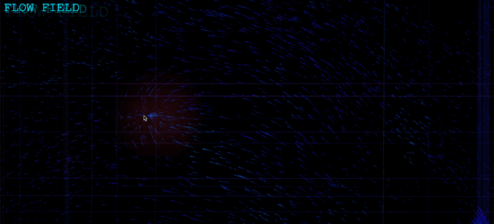
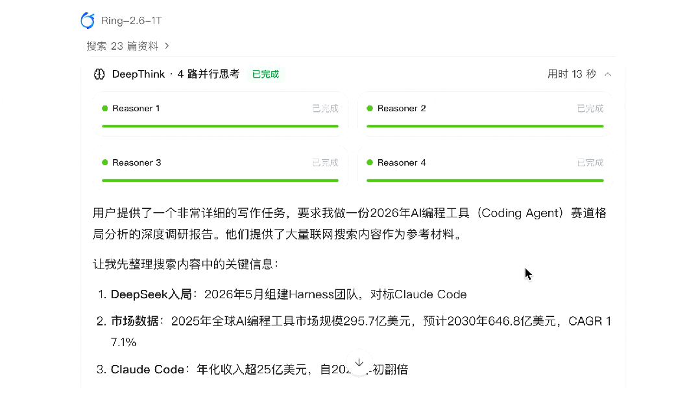
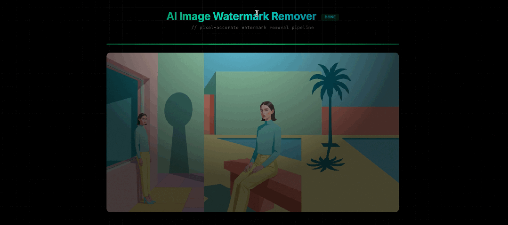

这，是一个交互式粒子流场。
2400 个粒子跟随柏林噪声（Perlin noise）流场运动，霓虹渐变拖尾，老式显示器的扫描线质感。鼠标移动产生吸引力场，点击一下，粒子爆炸四散再重新汇聚。
一句提示词。3 分钟。
由 Ling Studio 上的蚂蚁百灵 Ring-2.6-1T 模型一次生成。
蚂蚁百灵大模型有三条产品线。Ling 是基础模型，Ring 是推理模型，Ming 是多模态。
Ring-2.6-1T 是蚂蚁最新的推理模型，定位「不止于思考，更擅长把复杂事做成」。
从模型 ID 也能看出，万亿参数。MoE（混合专家）架构，推理时只激活 630 亿。万亿的规模，630 亿的推理成本。5 月 15 日正式开源，MIT 协议，模型权重在 Hugging Face 和 ModelScope，可以直接下载。
支持百万（1M）上下文，中文训练数据占比超过 60%。
万亿参数的推理模型，最大的难题是「训练不稳定」。
参数量越大、思维链越长，训练越容易跑偏。蚂蚁自研了 IcePop 训练算法，专门解决这个问题，让万亿参数规模的强化学习跑得又稳又快。Ring 系列能存在，就是因为这个工程问题被解决了。Ring-2.6-1T 已经是第三次迭代。
Ring-2.6-1T 支持三档推理深度。快速模式轻量思考，秒回；深入模式适合日常编码和 Agent 任务，速度快，省 token；DeepThink 模式留给数学推理、深度调研这类硬核任务，思考时间更长。
该快则快，该深则深。

在 Agent 场景，Ring-2.6-1T 用 high 模式在 PinchBench 狂砍 87.60 分，GPT-5.4 xHigh 79.40，Gemini-3.1-Pro high 77.50，都在它后面。
切换到 xhigh 模式。AIME 2026 数学竞赛 95.83，与 DeepSeek-V4-Pro 持平。ARC-AGI-V2 拿下 66.18，开源第一。
来实测一波。
打开 Ling Studio（chat.ant-ling.com），顶部选择 Ring-2.6-1T，推理深度设置成「深入」，激活「网页生成」技能。

一句提示词把效果描述清楚。
发送。

Ring-2.6-1T 开始思考。
它先把需求拆分成了 10 个子项，然后逐个规划技术方案。流场用柏林噪声生成 2D 向量场，粒子系统用 HSB 颜色空间映射霓虹渐变，拖尾用半透明黑色矩形覆盖实现，鼠标交互用距离反比衰减的吸引力场。

思考了 176 秒。连性能优化也考虑在内了。

然后开始调用「网页生成」技能写代码，设计页面。
输出速度 134 token/秒，总耗时约 3 分半。一次生成。

最后就有了文章开头那个炫酷的粒子流场。

更爽的是，Ling Studio 支持实时预览，一键分享。
上链接：https://chat.ant-ling.com/web-share/346f133134ebfd19b0dd07b42c98b1cd。
切换到 DeepThink 模式，打开联网搜索。
这次让 Ring-2.6-1T 写一份行业调研报告。主题是「2026 年 AI 编程工具（Coding Agent）赛道格局分析」，覆盖主要玩家。

Ring-2.6-1T 直接启动了「4 路并行思考」，开始联网搜索。有点意思。

四个 Reasoner 各自独立分析不同维度，最后汇总输出。

DeepThink 思考完成后开始生成报告。
从研究计划、五维对比（技术路线、产品形态、定价策略、融资估值、目标用户），到下半年三大关键趋势和胜出判断，结构完整，关键数据带引用来源。

接着让它把报告做成网页，便于展示。
生成的网页排版像一份正经的研究报告。顶部导航栏 11 个章节，大号衬线标题，留白充足，表格和对比数据各归各位。提示词里没提任何设计要求，它自己选了这套几乎没有 AI 味的风格。

同样附上最终版报告链接。
https://chat.ant-ling.com/web-share/23d4837584941e15ae4b4e8f59fd5121。
DeepThink 输出前有一段思考时间，拆解更细致，数据交叉验证更多。日常干活用「深入」模式，硬核调研用 DeepThink 拉满思考。
继续。接下来让 Ring-2.6-1T 写一个实用工具。
谷歌的 Nano Banana Pro 生成的图片，右下角会带一个四角星水印。就像这样。

我想让 Ring-2.6-1T 写一个去水印工具。
提示词就一句话。「写一个单文件 HTML 工具，去除 Nano Banana Pro 图片右下角水印，上传图片后自动定位并一键去除，支持下载，暗色主题，不依赖外部库。先说技术方案再写代码。」

模型先输出技术方案。
扫描右下角区域检测水印像素，通过亮度和饱和度筛选，然后用边界扩散算法逐层修复。

第一版代码生成完毕，打开 HTML 上传测试图片。
水印去掉了一部分，但轮廓还在。

把问题继续丢给 Ring-2.6-1T。
「水印没完全去掉，右下角还能看到轮廓。检查一下水印的定位是否准确，去除算法是否完全覆盖了。」

模型重新分析。水印区域比例偏小，alpha 混合方向有 Bug，变量没赋值。
逐个修复后水印这下去掉了，但留了一个矩形色块，跟周围背景颜色不一样。

再追问。「能不能换个算法。」
这次 Ring-2.6-1T 4 路并行疯狂思考 484 秒。最终换了一套方案。

搞定。水印完美去掉。

值得一提的是，Ring-2.6-1T 设计的工具界面有模有样。纯黑背景配细密网格纹理，标题用了青绿色渐变，上传区域虚线边框。
我没指定任何 UI 风格，它自己选了这套暗色极客风。

去水印工具的链接在这里。拿走不谢。
https://chat.ant-ling.com/web-share/5c35cf18b7f95ff48f5eb3b19c785f2c。
三轮对话。从「水印没完全去掉」到「完美去除」。Ring-2.6-1T 自己找 Bug，自己研究算法，自己修复。
最终交付可用的结果。
重点来了。
Ring-2.6-1T API 已经上线 Ling Studio，每天 50 万免费 token 额度。
5 月 31 日前，Ling Studio 上全系列模型 1 折，包括 Ling-2.6-1T、Ling-2.6-flash 和 Ring-2.6-1T。
体验地址 chat.ant-ling.com，或者直接搜索「百灵大模型」。

万亿参数，开源免费，还能干活。
我是木易，Top2 + 美国 Top10 CS 硕，现在是 AI 产品经理。
关注「AI信息Gap」，让 AI 成为你的外挂。